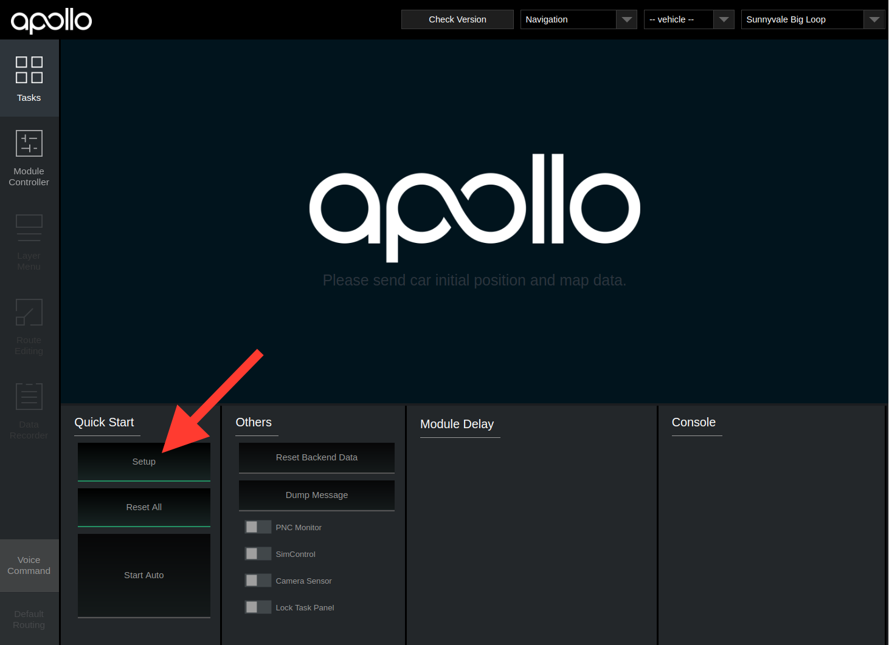
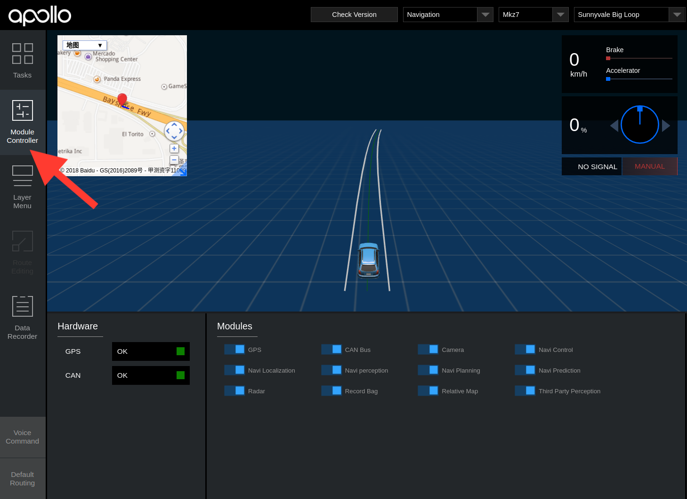

Apollo 3.5 Quick Start Guide#
The following guide serves as a user manual for launching the Apollo upgraded software and hardware stack on vehicle.
The the latest Apollo upgrade, Quick Start Guide focuses on the new features. For general Apollo concepts, please refer to Apollo 1.0 Quick Start.
Contents#
Calibration Guide#
For the vehicle's onboard testing make sure you have calibrated all the sensors. For sensor calibration, please refer to Apollo 2.0 Sensor Calibration Guide before you proceed.
Hardware and Software Installation#
Please refer to Apollo 3.5 Hardware and System Installation Guide for the steps to install the hardware components and the system software, as well as Apollo Software Installation Guide.
Dreamview Usage Table#
For questions regarding Dreamview icons refer to the Dreamview Usage Table.
Onboard Test#
-
Plug-in an external hard-drive to any available USB port in the host machine.
-
Turn on the vehicle, and then the host machine.
-
Launch Docker Release Container.
-
Launch DreamView.
Note\: Use your favorite browser to access Dreamview web service in your host machine browser with URL http://localhost:8888.

- Select Mode, Vehicle and Map.

Note\: You'll be required to setup profile before doing anything else. Click the dropdown menu to select Navigation mode, the HDMap and vehicle you want to use. The lists are defined in HMI config file.
Note\: It's also possible to change the profile on the right panel of the
HMI, but just remember to click Reset All on the top-right corner to
restart the system.
- Start the Modules.
Click the Setup button.

Go to Module Controller tab, check if all modules and hardware are ready. (Note\: In your offline environment, the hardware modules such as GPS, CANBus, Velodyne, Camera and Radar cannot be brought up.) (Note\: You may need to drive around a bit to get a good GPS signal.)

-
Under
Default Routingselect your desired route. -
Under Tasks click
Start Auto. (Note: Be cautious when starting the autonomous driving, you should now be in autonomous mode.)

-
After the autonomous testing is complete, under Tasks click
Reset All, close all windows and shutdown the machine. -
Remove the hard drive.